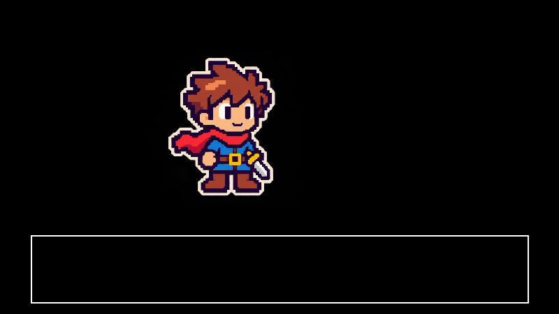

<!doctype html><html lang="ko"><meta charset="utf-8"><meta name="viewport" content="width=device-width,initial-scale=1"><title>주인공 동작 예시</title><style>body{margin:0;background:#111;color:#ccc;min-height:100vh;display:grid;place-content:center;font:14px sans-serif}main{width:min(100vw,1000px)}img{width:100%;display:block;image-rendering:pixelated}p{padding:0 12px}</style><main><p>대기 → 이동 → 칼 휘두르기 → 웃는 표정 · 반복 재생</p></main></html>